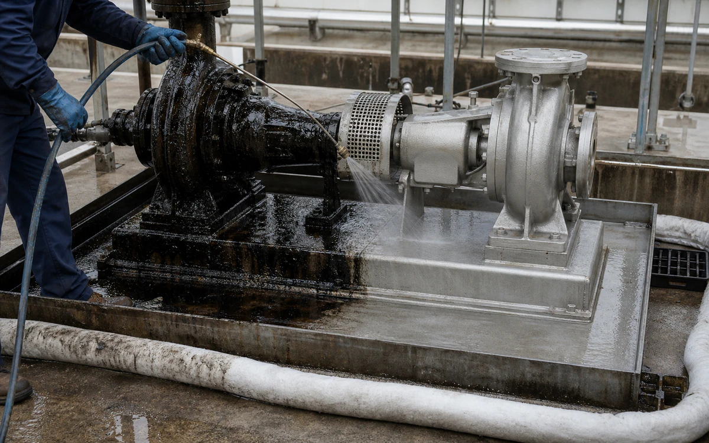
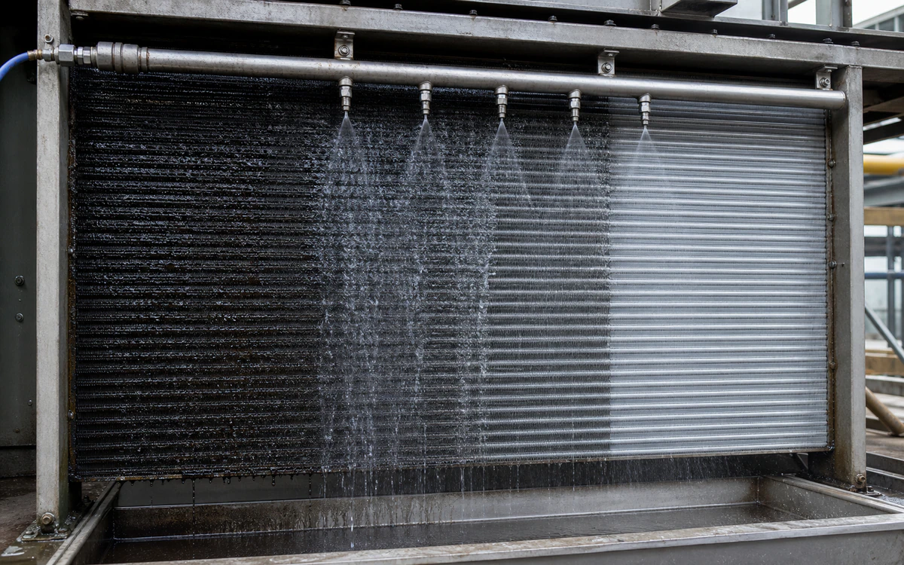

Industries › Oil & Gas / Industrial Plants
Industrial scale, tanks, and grease without making EHSS carry the switch.
Tank cleaning, scale, and HAZWOPER-level safety burden make industrial chemistry a review-heavy decision.
- CleanTanks, exchangers, separators, process piping, pumps, valves, equipment skids, shop parts, and containment floors
- RemoveOil and grease, hydrocarbon sludge, carbon, corrosion product, carbonate scale, and mixed process deposit
- MethodDecontaminate and isolate, bulk-remove, degrease or circulate, recover, rinse, inspect, and document waste
- BoundaryPermit, LOTO/blinding, confined-space and gas-free controls, ignition management, process-owner approval, and compatible temporary equipment.
- Open task controls and documents
Why VertKleen fits Oil & Gas / Industrial Plants.
Oil, gas, and industrial plants need serious scale, rust, tank, and grease cleaning while EHSS reviews the handling path. HCR, CR, and CR HD cover the main industrial replacements with a lower-hazard file.
Review field evidence

Recommended
VertKleen products for Oil & Gas / Industrial Plants.
VertKleen options for Oil & Gas / Industrial Plants workflows.
Applications and proof
Clean hydrocarbon, grease, and scale from isolated process and utility assets under plant permit controls.
Task controls first. Product choice follows the asset, deposit, materials, operating window, and discharge route.
- Task
- Clean hydrocarbon, grease, and scale from isolated process and utility assets under plant permit controls.
- Asset / substrate
- Tanks, exchangers, separators, process piping, pumps, valves, equipment skids, shop parts, and containment floors
- Soil / deposit
- Oil and grease, hydrocarbon sludge, carbon, corrosion product, carbonate scale, and mixed process deposit
- Starting chemistry
- VertKleen CIP HCR, VertKleen CIP CR, VertKleen CR HD
- Concentration
- Use the applicable current label/TDS range; set the trial point from soil/deposit analysis, metallurgy, temperature, and circulation capability.
- Process controls
- Record gas test, concentration, temperature, wet dwell, spray/brush/flow agitation, rinse, recovery, and waste characterization.
- Shutdown / containment
- Permit, LOTO/blinding, confined-space and gas-free controls, ignition management, process-owner approval, and compatible temporary equipment.
- Verification endpoint
- No free hydrocarbon, defined white-wipe/visual criterion, stable rinse endpoint, recovered thermal/hydraulic performance, and signed acceptance.
Controlled downloads
Review the current safety and application file.
Confirm revision, product identity, material compatibility, and application scope before site approval.
VertKleen CIP HCR — Safety Data Sheet (SDS)MAS-VK-HCR-SDS · Rev 1.0 · Distribution: Current · Claims: No automated flags · SKUs: VK-HCR
VertKleen CIP HCR — Technical Data Sheet (TDS)MAS-VK-HCR-TDS · Rev 1.0 · Distribution: Current · Claims: Review required · SKUs: VK-HCR
VertKleen CIP HCR — HCR & Descaler User Guide + Dilution RatesMAS-VK-HCR-DESC-GUIDE · Rev 1.0 · Distribution: Current · Claims: Review required · SKUs: VK-HCR, VK-DESC, VK-CRS
VertKleen CIP HCR — Product LabelMAS-VK-HCR-LABEL · Rev 1.0 · Distribution: Current · Claims: Review required · SKUs: VK-HCR
VertKleen CIP HCR — Field Note: Pool Filter CleaningMAS-VK-HCR-POOL-FILTER · Rev 1.0 · Distribution: Current · Claims: No automated flags · SKUs: VK-HCR
VertKleen CR HD — Safety Data Sheet (SDS)MAS-VK-CRHD-SDS · Rev 1.0 · Distribution: Current · Claims: No automated flags · SKUs: VK-CRHD
Scope the job
Bring us your Oil & Gas / Industrial Plants cleaning task.
The request opens with asset, soil, operating conditions, materials, wastewater route, and buying deadline already prompted.